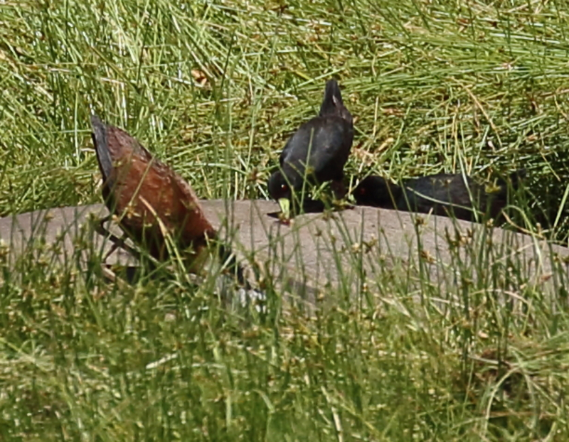

From: Nate Dias <offshorebirder@gmail.com>
Date: 2017-02-04 11:03
Subject: Jacanas and Black Crakes feeding on Hippo parasites?
Has anyone ever seen African Jacanas or Black Crakes eating
ectoparasites on Hippos? Is this unusual behavior - or not really?
I ask because I think I may have documented this, yet have never heard
of such behavior.
Background:
Not long ago I bought lunch at Little Governor's Camp in the Mara
Triangle to gain access for some forest birding (had a nice encounter
with a pair of Schalow's Turacos among other goodies).
The wetland behind the dining area was pretty low and a few Hippos
were semi-submerged in the mud and shallow water. A couple of the
Hippos were being used as roosting islands by waterbirds.
One Hippo also apparently provided a foraging platform. As the
following images show, the Black Crake and African Jacana seem to be
repeatedly pecking at things on the Hippo's skin. I do not think it
was flies, odonates, etc; I think it was something on the Hippo -
ticks seem most likely.
See the attached image file for what seems like waterbirds acting like
Oxpeckers.
This photo is larger, so I will send the web link and not email it as
an attachment:
https://www.flickr.com/photos/offshorebirder2/32360573143/sizes/o/
Feedback appreciated.
Good birding,
Nate Dias
